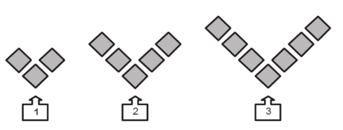
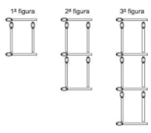

Selecione um tópico no mapa mental para acessar o conteúdo.
Números - Introdução
O Eixo Números tem como objetivo desenvolver a compreensão dos diferentes conjuntos numéricos — naturais, inteiros, racionais e decimais — e suas propriedades, com foco na construção do raciocínio lógico e na resolução de problemas. A BNCC orienta que os estudantes reconheçam, leiam, escrevam, comparem e ordenem esses números, além de compreenderem o valor posicional no sistema de numeração decimal, consolidando habilidades essenciais para o pensamento matemático.
Esse Eixo também contempla o domínio das operações fundamentais — adição, subtração, multiplicação e divisão — e suas propriedades, incentivando o uso de estratégias variadas como cálculo mental, estimativas e algoritmos. O trabalho com números é apresentado em situações contextualizadas, como compras, medidas, jogos e organização de dados, promovendo a aplicação prática da Matemática no cotidiano e tornando o aprendizado mais significativo.
Ao longo da Educação Básica, os alunos ampliam sua compreensão sobre os diferentes tipos de números, suas representações e usos, desenvolvendo autonomia para interpretar informações, resolver problemas e tomar decisões fundamentadas em diversos contextos. Essa progressão favorece a formação de cidadãos críticos e capazes de utilizar a Matemática como ferramenta para compreender e interagir com o mundo.
Sistemas Numéricos
Selecione um sistema de numeração para explorar:
Decimal
Romano
Egípcio
Maia
Binário
Sistema Decimal
O sistema decimal é o sistema de numeração de base 10, o mais utilizado atualmente. Ele utiliza 10 algarismos (0, 1, 2, 3, 4, 5, 6, 7, 8, 9) e é um sistema posicional, onde o valor de cada algarismo depende de sua posição no número.
Definição
Exemplos
Atividades
Características do Sistema Decimal
Base 10
Utiliza 10 símbolos (0-9)
Sistema posicional
Valor posicional: unidades, dezenas, centenas, etc.
Exemplos Resolvidos
O número 325 no sistema decimal significa:
3 × 10² + 2 × 10¹ + 5 × 10⁰ = 300 + 20 + 5 = 325
Atividades Interativas
1. Qual é o valor posicional do algarismo 7 no número 7.421?
7 unidades
7 dezenas
7 centenas
7 milhares
Correto! O algarismo 7 está na casa dos milhares, representando 7.000.
Ops, não foi dessa vez! No número 7.421, o 7 está na posição dos milhares.
Sistema Romano
O sistema de numeração romana surgiu na Roma Antiga como forma de registrar quantidades e organizar a vida administrativa e militar. Hoje, seu uso está restrito a contextos específicos, como a numeração de incisos de artigos de lei, séculos e eventos históricos, entre outros. A escrita dos números romanos segue um método posicional, em que os símbolos representam valores fixos e sua posição determina se devem ser somados ou subtraídos: por exemplo, I antes de V ou X indica subtração, assim como X antes de L, C, D ou M. Para representar valores superiores a 3.999 (MMMCMXCIX), utiliza-se um traço sobre o(s) símbolo(s), multiplicando-os por 1.000 - como no caso de 4.000, representado por \(\overline{IV}\) (ou M\(\overline{V}\))
- e, se necessário, um segundo ou um terceiro traço podem ser adicionados para multiplicar novamente por 1.000, p. ex. , \(\overline{\overline{IV}}=4.000.000\) \(\overline{\overline{\overline{IV}}}=4.000.000.000\), e assim por diante.
Definição
Exemplos
Atividades
Símbolos Romanos
I
1
V
5
X
10
L
50
C
100
D
500
M
1000
Exemplos Resolvidos
XV = 10 + 5 = 15
IX = 10 - 1 = 9 (sempre que um símbolo menor aparece antes de um maior, subtrai-se)
XLV = (50 - 10) + 5 = 40 + 5 = 45
Atividades Interativas
1. Nas terras antigas do Oriente, um jovem viajante encontrou uma pedra marcada com os símbolos XXIV e, curioso, perguntou ao velho mestre seu significado. Com olhar sereno, o sábio respondeu que se trata de um número, que é:
24
26
204
34
Correto! XXIV = 10 + 10 + (5 - 1) = 20 + 4 = 24.
Ops, não foi dessa vez! Lembre-se: XX = 20, IV = 4, portanto XXIV = 24.
Sistema Egípcio
Por volta de 3000 a.C., com a unificação do Egito sob um único faraó, surgiu uma das primeiras e mais duradouras civilizações complexas da humanidade. Um estado centralizado demanda organização: cobrança de impostos, cálculo de estoques de grãos, planejamento de colheitas, medição de terras após as cheias do Nilo e a construção de monumentos faraônicos. Para administrar tudo isso, era indispensável um sistema eficiente de contagem e registro. Foi nesse contexto que os egípcios desenvolveram um dos sistemas de numeração mais antigos de que temos conhecimento, um sistema que, embora diferente do nosso, foi incrivelmente eficaz por milênios.
O sistema de numeração egípcio era decimal, ou seja, baseava-se em agrupamentos de 10, assim como o nosso. No entanto, possuía duas características fundamentais que o distinguem do sistema que usamos hoje:
Não era Posicional: O valor de um símbolo não dependia de sua posição (unidade, dezena, centena), mas sim do próprio símbolo utilizado. Cada potência de 10 (1, 10, 100, 1000, etc.) tinha um símbolo único.
Era Aditivo: Para formar um número, os símbolos necessários eram escritos juntos e seus valores somados. A ordem dos símbolos geralmente não importava, embora frequentemente os escribas os organizassem da maior para a menor unidade, por uma questão de estética.
Definição
Exemplos
Atividades
Símbolos Egípcios
𓏺
1
𓎆
10
𓍢
100
𓆼
1.000
𓂭
10.000
𓆐
100.000
𓁨
1.000.000
Os egípcios usavam um sistema aditivo, onde os valores dos símbolos se somavam para formar números.
Exemplos Resolvidos
Para representar o número 324, os egípcios usariam:
Correto! 1101 em binário é 1×8 + 1×4 + 0×2 + 1×1 = 8+4+0+1 = 13.
Ops, não foi dessa vez! Lembre-se: cada posição no binário representa uma potência de 2.
Operações Matemáticas
As operações fundamentais da matemática são: adição, subtração, multiplicação, divisão, potenciação e radiciação. Cada uma delas possui propriedades específicas.
Adição
Subtração
Multiplicação
Divisão
Potenciação
Radiciação
Adição
Adição é uma operação matemática que combina dois ou mais números, chamados de parcelas, para obter um único número, chamado de soma, que representa o total resultante dessa junção.
Propriedades da Adição
COMUTATIVA - A ordem das parcelas não altera o resultado da soma. a + b = b + a
ASSOCIATIVA - O modo de agrupar as parcelas não interfere no resultado da adição. (a + b) + c = a + (b + c)
ELEMENTO NEUTRO - O número zero é o elemento neutro da adição, pois não altera o valor da parcela ao ser somado. a + 0 = a
FECHAMENTO - A soma de dois números reais resulta sempre em outro número real. a soma de dois números reais é sempre um número real.
Subtração
é uma operação matemática que determina a diferença entre dois números, indicando quanto falta ou resta ao retirar uma quantidade de outra.É a operação inversa da adição.
Propriedades da Subtração
NÃO COMUTATIVA - A subtração não é comutativa, pois trocar a ordem dos termos altera o resultado. a - b ≠ b - a (exceto quando a = b)
NÃO ASSOCIATIVA - A subtração não é associativa, ou seja, mudar o agrupamento dos termos altera o resultado. (a - b) - c ≠ a - (b - c)
ELEMENTO NEUTRO - O número zero es o elemento neutro da subtração à direita, pois subtrair zero não altera o valor da parcela. a - 0 = a
ANULAÇÃO - A subtração de um número por ele mesmo resulta em zero — isso é chamado de anulação. a - a = 0
Multiplicação
A multiplicação é uma operação matemática que combina quantidades iguais, indicando o total obtido ao repetir uma mesma parcela varias vezes.
Propriedades da Multiplicação
COMUTATIVA, - pois a ordem dos fatores não altera o produto. a × b = b × a
ASSOCIATIVA, - ou seja, o modo de agrupar os fatores não muda o resultado. (a × b) × c = a × (b × c)
DISTRIBUTIVA - em relação à adição e à subtração, ou seja, ao multiplicar um número por uma soma ou por uma diferença, podemos multiplicar cada termo separadamente e depois somar ou subtrair os resultados. a × (b + c) = a×b + a×c
ELEMENTO NEUTRO - O número 1 é o Elemento neutro da multiplicação, pois não altera o valor do fator. a × 1 = a
ELEMENTO NULO - O número 0 (zero) é o Elemento nulo da multiplicação, pois anula qualquer fator. a × 0 = 0
Divisão
é uma operação matemática que determina quantas vezes uma quantidade cabe dentro de outra, ou como repartir uma quantidade em partes iguais. É a operação inversa da multiplicação.
Propriedades da Divisão
NÃO COMUTATIVA - A divisão não é comutativa, ou seja, trocar a ordem dos termos altera o resultado. a ÷ b ≠ b ÷ a (exceto quando a = b)
NÃO ASSOCIATIVA - A divisão não é associativa, ou seja, mudar o agrupamento dos termos altera o resultado. (a ÷ b) ÷ c ≠ a ÷ (b ÷ c)
ELEMENTO NEUTRO - O número 1 é o elemento neutro da divisão, pois dividir um número por 1 não altera seu valor. a ÷ 1 = a
DIVISÃO POR ZERO - A divisão por zero não é definida no conjunto dos números reais, pois não existe número que multiplicado por zero resulte em um valor diferente de zero.
Potenciação
É uma operação matemática que expressa o produto de fatores iguais, definida como a multiplicação sucessiva de uma mesma base por ela mesma, tantas vezes quanto indica o expoente.
Propriedades da Potenciação
Multiplicação de potências de mesma base: \(a^m \cdot a^n = a^{m+n}\)
Divisão de potências de mesma base: \(\dfrac{a^m}{a^n}\equiv a^m \div a^n = a^{m-n}\)
Potência de potência: \((a^m)^n = a^{m \cdot n}\)
Potência de um produto: \((a \cdot b \cdot c \cdot \\ \ldots \\ \cdot z)^n=a^{n} \cdot b^{n} \cdot c^{n} \cdot \\ \ldots \\ \cdot z^{n}\)
Potência de um quociente: \(\left(\dfrac{a}{b}\right)^n \equiv (a \div b)^n= \left(\dfrac{a^n}{b^n}\right)\)
Nesta seção, exploramos problemas que envolvem as operações fundamentais com diferentes conjuntos numéricos: naturais, inteiros, racionais, irracionais e reais.
Naturais
Inteiros
Racionais
Irracionais
Reais
Problemas com números naturais
Os números naturais são aqueles usados para contar (0, 1, 2, 3, ...).
1. O Vizir de Bagdá entregou a Sherazade 437 pérolas mágicas para que ela distribuísse igualmente entre 6 princesas do reino. Após a divisão, Sherazade guardou as pérolas que não puderam ser divididas.
Quantas pérolas Sherazade guardou?
5
4
3
0
72
Correto! 437 = 72 x 6 + 5.
Ops, não foi dessa vez!
Problemas com números inteiros
Os números inteiros incluyen os naturais e seus opostos negativos (..., -2, -1, 0, 1, 2, ...).
1. A temperatura era de -3°C e aumentou 5°C. Qual é a temperatura agora?
2°C
-2°C
8°C
-8°C
Correto! -3 + 5 = 2.
Ops, não foi dessa vez! Some -3 + 5.
Problemas con números racionais
Números racionais são aqueles que podem be expressos como uma fração a/b, onde a e b são inteiros e b ≠ 0.
1. Maria comeu 1/2 de uma pizza e João comeu 1/4. Que fração da pizza eles comeram juntos?
3/4
1/2
2/6
1/8
Correto! 1/2 + 1/4 = 2/4 + 1/4 = 3/4.
Ops, não foi dessa vez! Some as frações: 1/2 = 2/4, então 2/4 + 1/4 = 3/4.
Problemas con números irracionais
Números irracionais são números que não podem ser expressos como fração, como \(\pi\) e \(\sqrt{2}\).
1. Qual é o comprimento da circunferência de um círculo com raio 1? (Use \(\pi\) = 3,14)
Ops, não foi dessa vez! Calcule a raiz quadrada de 4, o módulo de -3 e some tudo.
Múltiplos e Divisores
Os conceitos de múltiplos e divisores são fundamentais na teoria dos números e têm aplicações importantes em diversos contextos matemáticos, desde a simplificação de frações até a resolução de problemas de contagem e divisibilidade.
Múltiplos de um Número
Um número natural \(m\) é múltiplo de outro número natural \(n\) (diferente de zero) se existir um número natural \(k\) tal que \(m = n \times k\).
Exemplo: Os múltiplos de 3 são 0, 3, 6, 9, 12, 15, ...
Divisores de um Número
Um número natural \(d\) é divisor de outro número natural \(n\) se a divisão de \(n\) por \(d\) for exata, ou seja, se o resto dessa divisão for zero.
Exemplo: Os divisores de 12 são 1, 2, 3, 4, 6 e 12.
Propriedades dos Múltiplos e Divisores
Todo número natural é múltiplo de si mesmo
Todo número natural é múltiplo de 1
O zero é múltiplo de qualquer número natural
O conjunto dos múltiplos de um número é infinito
O conjunto dos divisores de um número é finito
Critérios de Divisibilidade
São regras que permitem verificar se um número é divisível por outro sem efetuar a divisão:
Divisibilidade por 2: Um número é divisível por 2 quando é par (termina em 0, 2, 4, 6 ou 8)
Divisibilidade por 3: Um número é divisível por 3 quando a soma dos seus algarismos é divisível por 3
Divisibilidade por 4: Um número é divisível por 4 quando seus dois últimos algarismos formam um número divisível por 4
Divisibilidade por 5: Um número é divisível por 5 quando termina em 0 ou 5
Divisibilidade por 6: Um número é divisível por 6 quando é divisível por 2 e por 3 simultaneamente
Divisibilidade por 7: Um número é divisível por 7 quando o módulo da diferença entre o dobro do último algarismo e o restante for um múltiplo de 7. Alternativamente, para números com mais de um classe de algarismos, efetua-se a diferença entre as classes, se resultar em um múltiplo de 7, este também o será.
Divisibilidade por 9: Um número é divisível por 9 quando a soma dos seus algarismos é divisível por 9
Divisibilidade por 10: Um número é divisível por 10 quando termina em 0
Números Primos
Números primos são números naturais maiores que 1 que possuem exatamente dois divisores distintos: o número 1 e ele mesmo. Esses números são fundamentais na matemática, especialmente na teoria dos números, e são considerados os "átomos" da aritmética, pois qualquer número natural maior que 1 pode ser expresso como um produto de números primos (Teorema Fundamental da Aritmética).
Características dos Números Primos
São números naturais maiores que 1
Possuem exatamente dois divisores: 1 e ele mesmo
O número 2 é o único número primo par
O conjunto dos números primos é infinito (demonstrado por Euclides)
Método eficiente para encontrar todos os números primos até um determinado limite. O algoritmo consiste em:
Listar todos os números de 2 até o limite desejado
Manter o primeiro número (2) e eliminar todos os seus múltiplos
Repetir o processo com o próximo número não eliminado
Continuar até que não haja mais números para eliminar
Os números restantes são primos
Teorema Fundamental da Aritmética
Todo número natural maior que 1 pode ser escrito como um produto de fatores primos, de forma única, exceto pela ordem dos fatores.
Exemplo: \(60 = 2^2 \times 3 \times 5\)
Aplicações dos Números Primos
Simplificação de frações
Cálculo do MMC e MDC
Criptografia (sistemas de segurança como RSA)
Teoria dos números e matemática pura
Divisibilidade
Divisibilidade é a propriedade que um número tem de ser dividido por outro número, resultando em uma divisão exata (com resto zero). Este conceito é fundamental na teoria dos números e possui aplicações importantes em diversos contextos matemáticos.
Relação de Divisibilidade
Dizemos que um número inteiro \(a\) é divisível por um número inteiro \(b\) (diferente de zero) se existir um número inteiro \(k\) tal que \(a = b \times k\). Neste caso, escrevemos \(b \mid a\) (lê-se "b divide a").
Propriedades da Divisibilidade
Reflexividade: Todo número inteiro diferente de zero divide a si mesmo: \(a \mid a\)
Transitividade: Se \(a \mid b\) e \(b \mid c\), então \(a \mid c\)
Multiplicação por constante: Se \(a \mid b\), então \(a \mid (k \times b)\) para qualquer inteiro \(k\)
Soma e diferença: Se \(a \mid b\) e \(a \mid c\), então \(a \mid (b + c)\) e \(a \mid (b - c)\)
Divisão de produtos: Se \(a \mid (b \times c)\) e \(mdc(a, b) = 1\), então \(a \mid c\)
Critérios de Divisibilidade
Regras práticas para verificar se um número é divisível por outro sem efetuar a divisão:
Divisibilidade por 2
Um número é divisível por 2 quando é par, ou seja, quando termina em 0, 2, 4, 6 ou 8.
Divisibilidade por 3
Um número é divisível por 3 quando a soma dos seus algarismos é divisível por 3.
Exemplo: 123 → 1+2+3 = 6, que é divisível por 3, logo 123 é divisível por 3.
Divisibilidade por 4
Um número é divisível por 4 quando seus dois últimos algarismos formam um número divisível por 4 (a metade desse número for par). Alternativamente, se o número formado pelos dois últimos algarismos for 00.
Exemplo: 1324 → 24 é divisível por 4, logo 1324 é divisível por 4.
Divisibilidade por 5
Um número é divisível por 5 quando termina em 0 ou 5.
Divisibilidade por 6
Um número é divisível por 6 quando é divisível por 2 e por 3 simultaneamente.
Divisibilidade por 7
Um número é divisível por 7 quando o módulo da diferença entre o dobro do último algarismo e o restante for um múltiplo de 7. Alternativamente, para números com mais de um classe de algarismos, efetua-se a diferença entre as classes, se resultar em um múltiplo de 7, este também o será.
Um número é divisível por 8 quando o número formado pelos três últimos algarismos também o forem (a metade da metade desse número for par). Alternativamente, se os três últimos algarismos forem 000.
Divisibilidade por 9
Um número é divisível por 9 quando a soma dos seus algarismos é divisível por 9.
Exemplo: 567 → 5+6+7 = 18, que é divisível por 9, logo 567 é divisível por 9.
Divisibilidade por 10
Um número é divisível por 10 quando termina em 0.
Números Primos entre Si
Dois números inteiros são primos entre si (ou coprimos) quando o único divisor comum entre eles é o número 1, ou seja, quando o máximo divisor comum (MDC) entre eles é 1.
Exemplo: 8 e 9 são primos entre si, pois mdc(8, 9) = 1.
MMC e MDC
O Mínimo Múltiplo Comum (MMC) e o Máximo Divisor Comum (MDC) são conceitos fundamentais da aritmética com diversas aplicações práticas, desde operações com frações até a resolução de problemas envolvendo periodicidade e divisão de quantidades.
Mínimo Múltiplo Comum (MMC)
Dados dois ou mais números naturais, o MMC é o menor número natural que é múltiplo de todos eles simultaneamente (excluindo o zero).
Métodos para Calcular o MMC
Decomposição em Fatores Primos
1. Decompor cada número em fatores primos
2. O MMC será o produto dos fatores primos, comuns e não comuns, elevados aos maiores expoentes
Exemplo: MMC(12, 18)
12 = 2² × 3
18 = 2 × 3²
MMC(12, 18) = 2² × 3² = 4 × 9 = 36
Método da Listagem de Múltiplos
1. Listar os múltiplos de cada número
2. Identificar o menor múltiplo comum a todos
Exemplo: MMC(4, 6)
M(4) = {4, 8, 12, 16, 20, 24, ...}
M(6) = {6, 12, 18, 24, 30, ...}
MMC(4, 6) = 12
Máximo Divisor Comum (MDC)
Dados dois ou mais números naturais, o MDC é o maior número natural que divide todos eles simultaneamente.
Métodos para Calcular o MDC
Decomposição em Fatores Primos
1. Decompor cada número em fatores primos
2. O MDC será o produto dos fatores primos comuns elevados aos menores expoentes
Exemplo: MDC(12, 18)
12 = 2² × 3
18 = 2 × 3²
MDC(12, 18) = 2 × 3 = 6
Algoritmo de Euclides
1. Dividir o maior número pelo menor
2. Dividir o divisor pelo resto da divisão anterior
3. Repetir o processo até obter resto zero
4. O último divisor não nulo é o MDC
Exemplo: MDC(48, 30)
48 ÷ 30 = 1 (resto 18)
30 ÷ 18 = 1 (resto 12)
18 ÷ 12 = 1 (resto 6)
12 ÷ 6 = 2 (resto 0)
MDC(48, 30) = 6
Relação entre MMC e MDC
Para dois números naturais \(a\) e \(b\), vale a relação:
\(MMC(a, b) \times MDC(a, b) = a \times b\)
Exemplo: Para a = 12 e b = 18
MMC(12, 18) = 36
MDC(12, 18) = 6
12 × 18 = 216
36 × 6 = 216
Aplicações do MMC e MDC
Aplicações do MMC
Operações com frações (denominador comum)
Problemas de encontro (quando eventos periódicos coincidem)
Problemas de divisão em partes iguais
Aplicações do MDC
Simplificação de frações
Problemas de divisão em partes iguais do maior tamanho possível
Problemas de agrupamento
Grandezas e Medidas - Introdução
O Eixo Grandezas e Medidas trata da compreensão, quantificação e comparação de atributos mensuráveis de objetos e fenômenos. Envolve o trabalho com grandezas como comprimento, área, volume, massa, tempo, temperatura e capacidade, utilizando unidades de medida padronizadas e não padronizadas.
A BNCC propõe que os estudantes desenvolvam habilidades para estimar, medir, converter unidades e resolver problemas contextualizados, utilizando instrumentos adequados e estratégias pessoales.
Esse Eixo favorece o pensamento matemático aplicado, aproximando os conteúdos da realidade dos alunos por meio de situações práticas, como medir ingredientes, calcular distâncias ou interpretar escalas. Também promove a articulação com outros campos do conhecimento, como Ciências e Geografia, ampliando a interdisciplinaridade e o uso funcional da Matemática.
O trabalho com grandezas e medidas contribui para a formação de cidadãos críticos e autônomos, capazes de interpretar e agir sobre o mundo físico com precisão, lógica e responsabilidade.
Conceitos Fundamentais - Grandezas e Medidas
Conceitos fundamentais: Os principais conceitos da geometria plana incluem os elementos primitivos (ponto, reta e plano), as figuras bidimensionais (triângulos, quadrados, círculos e outros polígonos) e as suas propriedades, como os ângulos, o perímetro (soma das medidas dos lados) e a área (medida da superfície da figura).
Elementos Básicos
Ângulos e Tipos
Relações entre Ângulos
Figuras Bidimensionais
Medidas Geométricas
1. Elementos Básicos da Geometria
Ponto: Representa uma posição no espaço. Não possui dimensão. É a unidade fundamental da geometria.
Reta: Sucessão infinita de pontos em uma única direção. Pode ser horizontal, vertical ou inclinada.
Plano: Superfície bidimensional que se estende infinitamente. Contém infinitos pontos e retas.
BNCC – EF05MA16: Reconhecer e representar pontos, retas e planos no espaço e no plano cartesiano.
\( \text{Ponto: } A \)
\( \text{Reta: } r: Ax + By + C = 0 \)
\( \text{Plano: } \pi: Ax + By + Cz + D = 0 \)
Representação matemática dos elementos básicos da geometria
2. Ângulos e seus Tipos
Ângulo: Abertura formada por duas semirretas com origem comum (vértice).
Tipos de ângulos:
Agudo: menor que 90°
Reto: exatamente 90°
Obtuso: maior que 90° e menor que 180°
Raso: exatamente 180°
Côncavo: maior que 180° e menor que 360°
Ângulo inteiro: exatamente 360°
BNCC – EF06MA16: Identificar e classificar ângulos em figuras geométricas e no cotidiano.
\( \angle A\hat{B}C \) - Ângulo com vértice em B
\( \alpha = 90^\circ \) - Ângulo reto
\( \theta < 90^\circ \) - Ângulo agudo
Representação de diferentes tipos de ângulos
3. Relações entre Ângulos
Complementares: somam 90°
Suplementares: somam 180°
Replementares: somam 360°
BNCC – EF07MA16: Resolver problemas que envolvam relações entre ângulos.
Figuras planas: possuem apenas comprimento e largura. Exemplos: triângulo, quadrado, círculo.
Polígonos: figuras formadas por segmentos de reta (lados) que se fecham em um plano.
Convexos: todos os ângulos internos são menores que 180°.
Côncavos: possuem pelo menos um ângulo interno maior que 180°.
BNCC – EF06MA17: Classificar figuras planas quanto ao número de lados e à convexidade.
\( A = \frac{1}{2} \times b \times h \) - Área do triângulo
\( A = l^2 \) - Área do quadrado
\( A = \pi r^2 \) - Área do círculo
Fórmulas de área para figuras bidimensionais
5. Medidas Geométricas
Perímetro: soma dos lados de uma figura plana. Representa o contorno.
Área: medida da superfície interna de uma figura plana.
BNCC – EF07MA18: Resolver problemas que envolvam cálculo de perímetro e área de figuras planas.
\( P = 2(b + h) \) - Perímetro do retângulo
\( P = 4l \) - Perímetro do quadrado
\( P = 2\pi r \) - Perímetro do círculo (circunferência)
Fórmulas de perímetro para figuras geométricas
Estratégias Didáticas
Exploração concreta: uso de dobraduras, régua, transferidor e materiais manipuláveis.
Contextualização: relacionar os conceitos com situações reais (ex: construção civil, design, arte).
Tecnologia: uso de softwares como GeoGebra e Scratch para visualização e construção de figuras.
Geometria
A Geometria é o ramo da matemática que estuda as formas, tamanhos, posições relativas e propriedades do espaço. É dividida em várias subáreas, incluindo Geometria Plana, Espacial, Analítica e Trigonometria.
Geometria Plana (GP)
Geometria Espacial (GE)
Geometria Analítica (GA)
Geometria Plana (GP)
A Geometria Plana estuda as figuras bidimensionais, ou seja, figuras que possuem comprimento e largura, mas não possuem profundidade.
Principais Conceitos
Ponto: elemento fundamental sem dimensões
Reta: sequência infinita de pontos
Plano: superfície plana que se estende infinitamente em todas as direções
Ângulo: região entre duas semirretas que compartilham a mesma origem
Figuras Planas Principais
Triângulo: polígono de três lados
Quadrado: polígono regular de quatro lados iguais
Retângulo: polígono com quatro ângulos retos
Círculo: conjunto de pontos equidistantes de um ponto central
Polígonos: figuras fechadas formadas por segmentos de reta
A Geometria Espacial é o ramo da matemática que estuda as formas tridimensionais — ou seja, aquelas que possuem altura, largura e profundidade. Ela trata de sólidos como prismas, pirâmides, cilindros, cones e esferas, explorando suas propriedades, medidas (como área e volume) e relações no espaço.
Sólidos Geométricos Principais
Prismas: sólidos com duas bases paralelas e congruentes
Pirâmides: sólidos com uma base poligonal e faces triangulares que se encontram em um vértice
Cilindro: sólido con uma base circular e um vértice
Cone: sólido con uma base circular e um vértice
Esfera: conjunto de pontos equidistantes de um ponto central no espaço
Elementos dos Sólidos Geométricos
Face: cada uma das superfícies que limitam o sólido
Aresta: linha de intersecção entre duas faces
Vértice: ponto de encontro de três or mais arestas
Base: face sobre a qual o sólido se apoia
Fórmulas Importantes
Volume do cubo: V = a³
Volume do paralelepípedo: V = a × b × c
Volume do prisma: V = A_base × altura
Volume da pirâmide: V = (A_base × altura)/3
Volume do cilindro: V = πr²h
Volume do cone: V = (πr²h)/3
Volume da esfera: V = (4πr³)/3
\( V = \frac{4}{3}\pi r^3 \) - Volume da esfera
\( A = 4\pi r^2 \) - Área da superfície esférica
\( V = \pi r^2 h \) - Volume do cilindro
Fórmulas de geometria espacial
Geometria Analítica (GA)
A Geometria Analítica é o estudo da geometria através de um sistema de coordenadas e dos princípios da álgebra.
Conceitos Fundamentais
Plano Cartesiano: sistema de coordenadas com eixos x e y perpendiculares
Coordenadas: pares ordenados (x, y) que representam pontos no plano
Distância entre pontos: d = √[(x₂ - x₁)² + (y₂ - y₁)²]
Ponto médio: M = [(x₁ + x₂)/2, (y₁ + y₂)/2]
Estudo da Reta
Equação geral da reta: ax + by + c = 0
Equação reduzida da reta: y = mx + n
Coeficiente angular: m = (y₂ - y₁)/(x₂ - x₁)
Coeficiente linear: ponto onde a reta corta o eixo y
Estudo da Circunferência
Equação reduzida: (x - a)² + (y - b)² = r²
Equação geral: x² + y² + Dx + Ey + F = 0
Centro: ponto (a, b)
Raio: distância do centro a qualquer ponto da circunferência
\( d = \sqrt{(x_2 - x_1)^2 + (y_2 - y_1)^2} \) - Distância entre dois pontos
Triângulo é um polígono de três lados e três ângulos.
Classificação quanto aos lados
Equilátero: todos os lados são iguais.
Isósceles: dois lados são iguais.
Escaleno: todos os lados são diferentes.
Classificação quanto aos ângulos
Acutângulo: todos os ângulos são agudos (menores que 90°).
Retângulo: possui um ângulo reto (90°).
Obtusângulo: possui um ângulo obtuso (maior que 90°).
Propriedades dos Triângulos
Soma dos ângulos internos: sempre 180°
Desigualdade triangular: cada lado é menor que a soma dos outros dois
Relações métricas: relações entre lados e alturas em triângulos retângulos
Pontos Notáveis dos Triângulos
Baricentro: encontro das medianas (centro de gravidade)
Incentro: encontro das bissetrizes (centro da circunferência inscrita)
Circuncentro: encontro das mediatrizes (centro da circunferência circunscrita)
Ortocentro: encontro das alturas
Probabilidade e Estatística - Introdução
O eixo Probabilidade e Estatística desenvolve competências relacionadas à coleta, organização, representação, interpretação e análise de dados, além da compreensão de eventos aleatórios e suas chances de ocorrência. A BNCC propõe que esses conhecimentos sejam trabalhados desde os anos iniciais, com foco na leitura crítica de informações e na tomada de decisões fundamentadas.
Na Estatística, os estudantes aprendem a construir e interpretar tabelas, gráficos e medidas de tendência central (média, mediana e moda), aplicando esses recursos em contextos reales como pesquisas, notícias e situações escolares. Já na Probabilidade, são exploradas noções de previsibilidade, aleatoriedade e estimativa de chances, por meio de jogos, experimentos e problemas contextualizados.
Esse eixo contribui para o letramento estatístico e o desenvolvimento do pensamento crítico, preparando os alunos para lidar com a abundância de dados e incertezas presentes na sociedade contemporânea, especialmente em ambientes digitais e científicos.
Estatística
A Estatística é o ramo da Matemática dedicado à coleta, organização, análise e interpretação de conjuntos de dados, fornecendo elementos para a tomada de decisões fundamentadas em diferentes áreas do conhecimento. Suas raízes remontam às primeiras civilizações: o Egito antigo aplicava métodos de contagem para cálculos tributários e censitários, enquanto registros chineses datam de mais de dois milênios antes de Cristo. No século XVII, o surgimento do cálculo de probabilidade com Blaise Pascal and Pierre de Fermat lançou as bases teóricas da Estatística moderna, que se consolidou como disciplina autônoma no século XIX com os trabalhos de Adolphe Quetelet e Francis Galton.
Na perspectiva da Educação Fundamental II, a BNCC orienta que o ensino de Estatística estimule a curiosidade e o pensamento crítico por meio de práticas investigativas. Os estudantes aprendem a planejar coletas, organizar dados em tabelas de frequência e representá-los em gráficos de colunas, setores e histogramas. O cálculo de medidas de tendência central (média, mediana e moda) e de dispersão (amplitude e quartis) ganha significado quando inserido em contextos reais, como pesquisas de consumo, análise de indicadores ambientais ou avaliação de resultados esportivos. Essa abordagem contextualizada favorece a construção de competências para argumentar con base em evidências e identificar vieses na interpretação de números.
Ao aproximar a Estatística da realidade cotidiana, o professor de Matemática promove a alfabetização estatística, habilitando futuros cidadãos a interpretar informações quantitativas de veículos de imprensa, relatórios oficiais e levantamentos corporativos. A mediação docente deve articular conceitos formais e recursos tecnológicos — planilhas eletrônicas, softwares de visualização e calculadoras — para ampliar a autonomia investigativa dos alunos. Desse modo, a Estatística deixa de ser apenas uma coleção de procedimentos e configura-se como uma ferramenta ética de leitura do mundo, preparando jovens para atuarem de forma consciente e reflexiva na sociedade.
Probabilidade
A Probabilidade é o ramo da Matemática que estuda a incerteza e a aleatoriedade, fornecendo ferramentas para quantificar a chance de ocorrência de eventos. Seu desenvolvimento histórico está intimamente ligado aos jogos de azar, mas suas aplicações estendem-se a diversas áreas como estatística, física, economia e ciências atuariais.
Conceitos Fundamentais
Espaço Amostral: conjunto de todos os resultados possíveis de um experimento aleatório
Evento: subconjunto do espaço amostral
Probabilidade de um Evento: número entre 0 e 1 que representa a chance de ocorrência desse evento
Tipos de Probabilidade
Probabilidade Teórica: calculada com base em considerações teóricas
Probabilidade Experimental: determinada através da realização de experimentos
Probabilidade Subjetiva: baseada no julgamento pessoal ou experiência
Principais Regras
Regra da Adição: P(A ∪ B) = P(A) + P(B) - P(A ∩ B)
Regra da Multiplicação: P(A ∩ B) = P(A) × P(B|A)
Probabilidade Condicional: P(A|B) = P(A ∩ B) / P(B)
\( P(A) = \frac{\text{número de casos favoráveis}}{\text{número de casos possíveis}} \)
\( 0 \leq P(A) \leq 1 \)
\( P(\Omega) = 1 \)
Fórmulas básicas de probabilidade
Análise Combinatória
A Análise Combinatória é o ramo da Matemática que estuda métodos de contagem, permitindo calcular o número de possibilidades de ocorrência de eventos sem necessidade de enumerar todas as possibilidades. É fundamental para o cálculo de probabilidades e possui aplicações em diversas áreas como estatística, ciência da computação, genética e teoria dos jogos.
Princípio Fundamental da Contagem
Permutações
Arranjos
Combinações
Princípio da Casa dos Pombos
Princípio Fundamental da Contagem
O Princípio Fundamental da Contagem, também conhecido como Princípio Multiplicativo, é a base de todos os métodos de contagem em Análise Combinatória. Estabelece que se um evento pode ocorrer de m maneiras diferentes e, independentemente dessa escolha, um segundo evento pode ocorrer de n maneiras diferentes, então o número de maneiras que os dois eventos podem ocorrer na sequência é m × n.
Formulação Matemática
Se uma decisão D₁ pode ser tomada de m₁ maneiras, uma decisão D₂ de m₂ maneiras, ..., e uma decisão Dₖ de mₖ maneiras, então o número total de maneiras de tomar as decisões D₁, D₂, ..., Dₖ na sequência é:
N = m₁ × m₂ × ... × mₖ
Exemplos de Aplicação
Exemplo 1: Vestuário
Uma pessoa tem 4 camisetas, 3 calças e 2 pares de tênis. De quantas maneiras diferentes pode se vestir?
Solução: 4 × 3 × 2 = 24 maneiras diferentes.
Exemplo 2: Senhas
Quantas senhas de 4 dígitos podem ser formadas usando os algarismos 0-9?
Solução: 10 × 10 × 10 × 10 = 10⁴ = 10.000 senhas.
Exemplo 3: Rotas
Para ir da cidade A para a cidade C, passando pela cidade B, existem 3 estradas de A para B e 4 estradas de B para C. Quantas rotas diferentes existem de A para C?
Solução: 3 × 4 = 12 rotas diferentes.
Princípio Aditivo
Quando os eventos não ocorrem simultaneamente, mas sim como alternativas mutuamente exclusivas, usamos o Princípio Aditivo: se um evento pode ocorrer de m maneiras e outro evento pode ocorrer de n maneiras, e os eventos não podem ocorrer simultaneamente, então o número total de possibilidades é m + n.
Exemplo:
Um aluno pode escolher entre 3 cursos de exatas e 4 cursos de humanas. Quantas opções tem?
Solução: 3 + 4 = 7 opções (usando o princípio aditivo, pois os cursos são mutuamente exclusivos).
Permutações
Permutação é um arranjo ordenado de elementos distintos. Diferente dos arranjos simples, nas permutações utilizamos todos os elementos disponíveis, mudando apenas sua ordem. O estudo das permutações é fundamental em análise combinatória e tem aplicações em diversas áreas como computação, estatística e criptografia.
Permutação Simples
Dado um conjunto com n elementos distintos, o número de maneiras de ordenar esses elementos é dado pelo fatorial de n:
Quando os elementos são dispostos em um círculo, permutações que diferem apenas por rotação são consideradas iguais. O número de permutações circulares de \(n\) elementos distintos é:
\(PC_n = {(n - 1)}!\)
Exemplos:
Número de maneiras de arrumar 5 pessoas em uma mesa redonda: \(PC_5 = (5-1)! = 4! = 4 \cdot 3 \cdot 2 \cdot 1 = 24\)
Número de colares diferentes com 6 contas distintas: \(PC_6 = {(6-1)!} = 5! = 5 \cdot 4 \cdot 3 \cdot 2 \cdot 1 = 120 \)
Permutação Caótica (Desarranjo)
Permutação onde nenhum elemento ocupa sua posição original. O número de desarranjos de n elementos é dado por:
Há também outra fórmula, mais direta e eficaz que é \(! n = \dfrac{n!}{e}\), onde e é o numero de Euler, que vale aproximadamente 2,7.
Exemplos:
Número de desarranjos de 3 elementos: \(! 3 = \dfrac{3!}{e}=\dfrac{3 \cdot 2 \cdot 1}{2,7}=\dfrac{6}{2,7} \approx {2,2} = 2\)
Número de desarranjos de 4 elementos: \(! 4 = \dfrac{4!}{e}=\dfrac{4 \cdot 3 \cdot 2 \cdot 1}{2,7}=\dfrac{24}{2,7} \approx {8,9} = 9\)
Número de desarranjos de 5 elementos: \(! 5 = \dfrac{5!}{e}=\dfrac{5 \cdot 4 \cdot 3 \cdot 2 \cdot 1}{2,7}=\dfrac{120}{2,7} \approx {44,4} = 44\)
Arranjos
Arranjos são agrupamentos ordenados de elementos distintos, onde a ordem dos elementos importa. Diferentemente das permutações, nos arranjos não utilizamos todos os elementos disponíveis, mas apenas uma parte deles. Os arranjos são fundamentais em problemas de contagem onde a ordem de escolha é relevante.
Arranjo Simples
Dado um conjunto com n elementos distintos, o número de maneiras de escolher p elementos (p ≤ n) e ordená-los é dado por:
A(n, p) = n! / (n - p)!
ou equivalentemente:
A(n, p) = n × (n-1) × (n-2) × ... × (n-p+1)
Exemplos:
Número de possibilidades para os 3 primeiros colocados em uma corrida com 8 participantes:
A(8, 3) = 8 × 7 × 6 = 336
Número de senhas de 4 letras distintas que podem ser formadas com 6 letras:
A(6, 4) = 6 × 5 × 4 × 3 = 360
Arranjo com Repetição
Quando os elementos podem ser repetidos no agrupamento, o número de arranjos de p elementos escolhidos entre n elementos disponíveis é:
AR(n, p) = nᵖ
Exemplos:
Número de possibilidades de um código de 4 dígitos:
AR(10, 4) = 10⁴ = 10.000
Número de senhas de 3 caracteres que podem ser formadas con 26 letras:
AR(26, 3) = 26³ = 17.576
Diferença entre Arranjo e Combinação
A principal diferença entre arranjos e combinações está na importância da ordem dos elementos:
Arranjos: A ordem importa (AB ≠ BA)
Combinações: A ordem não importa (AB = BA)
Exemplo:
Considere as letras A, B, C:
Arranjos de 2 letras: AB, AC, BA, BC, CA, CB (6 possibilidades)
Combinações de 2 letras: AB, AC, BC (3 possibilidades)
Combinações
Combinações são agrupamentos não ordenados de elementos distintos, onde a ordem dos elementos não importa. Diferentemente dos arranjos, nas combinações consideramos iguais os agrupamentos que diferem apenas pela ordem dos elementos. As combinações são fundamentais em problemas de contagem onde estamos interessados apenas na composição do grupo, não na ordem dos elementos.
Combinação Simples
Dado um conjunto com n elementos distintos, o número de maneiras de escolher p elementos (p ≤ n) sem considerar a ordem é dado por:
Este número é também conhecido como coeficiente binomial e representado por \(\binom{n}{p}\).
Exemplos:
Número de comissões de 3 pessoas formadas a partir de 8:
\(C_{8, 3} = \dfrac{8!}{(8-3)! \cdot 3!}= \dfrac{8!}{5! \cdot 3!}= \dfrac{8 \cdot 7 \cdot \cancel{6} \cdot \cancel{5!}}{\cancel {5!} \cdot \cancel{3} \cdot \cancel{2} \cdot 1}=56\)
Número de maneiras de escolher 2 sabores de sorvete entre 5 disponíveis:
\(C_{2}^{5} = \dfrac{5!}{(5-2)! \cdot 2!} =\dfrac{5!}{3! \cdot 2!}=\dfrac{5 \cdot \cancel {4}^2 \cdot \cancel{3!}}{\cancel{3!} \cdot \cancel {2} \cdot 1}\) = 10
Combinação com Repetição
Quando os elementos podem ser repetidos no agrupamento, o número de combinações de p elementos escolhidos entre n elementos disponíveis é:
O Princípio da Casa dos Pombos (também conhecido como Princípio das Gavetas de Dirichlet) é um conceito fundamental da matemática discreta que estabelece que se mais objetos são colocados em menos compartimentos, então pelo menos um compartimento conterá mais de um objeto. Apesar de sua simplicidade, este princípio tem aplicações profundas em matemática, ciência da computação e diversas outras áreas.
Formulação Básica
Se n pombos são colocados em m casas e n > m, então pelo menos uma casa conterá mais de um pombo.
Formalmente: Se temos k+1 ou mais objetos para distribuir em k caixas, então pelo menos uma caixa conterá dois ou mais objetos.
Formulação Generalizada
Se n pombos são colocados em m casas, então pelo menos uma casa conterá pelo menos \(\lceil n/m \rceil\) pombos, onde \(\lceil x \rceil\) é a função teto (menor inteiro maior ou igual a x).
Exemplos Clássicos
Exemplo 1: Aniversários
Em um grupo de 13 pessoas, pelo menos 2 nasceram no mesmo mês.
Justificativa: 13 pessoas (pombos) e 12 meses (casas). Como 13 > 12, pelo menos um mês terá mais de uma pessoa.
Exemplo 2: Meias
Em uma gaveta com 10 meias pretas e 10 meias brancas, quantas meias precisamos retirar (no escuro) para garantir um par da mesma cor?
Resposta: 3 meias. Justificativa: Com 2 meias, poderíamos ter 1 preta e 1 branca. Com 3 meias, pelo princípio da casa dos pombos, pelo menos 2 serão da mesma cor.
Exemplo 3: Números
Dados 5 pontos dentro de um quadrado de lado 1, pelo menos 2 pontos estarão a uma distância menor ou igual a \(\frac{\sqrt{2}}{2}\).
Justificativa: Divida o quadrado em 4 quadrados menores de lado 1/2. Pelo princípio, pelo menos 2 pontos estarão no mesmo quadrado menor, cuja diagonal mede \(\frac{\sqrt{2}}{2}\).
Álgebra - Introdução
O eixo Álgebra tem como foco o desenvolvimento do pensamento algébrico, essencial para compreender, representar e analisar relações entre grandezas e estruturas matemáticas. A BNCC propõe que esse pensamento seja cultivado desde os anos iniciais, por meio da identificação de padrões, regularidades and propriedades das operações, mesmo antes do uso formal de letras.
À medida que avançam na escolarização, os estudantes passam a utilizar símbolos para expressar generalizações, construir expressões, equações e inequações, e resolver problemas que envolvem relações quantitativas. A Álgebra também permite transitar entre diferentes representações — numéricas, algébricas, gráficas e tabulares — favorecendo a modelagem de situações reais e o uso de estratégias variadas de resolução.
Esse eixo contribui para a formação de uma linguagem matemática mais abstrata e estruturada, promovendo a argumentação, a análise de interdependência entre grandezas e a compreensão de fenômenos que envolvem variação e proporcionalidade.
Sequências e Padrões
Sequências são conjuntos ordenados de números ou objetos que seguem um padrão específico. O estudo de sequências e padrões é fundamental para o desenvolvimento do pensamento algébrico, pois permite identificar regularidades e estabelecer generalizações.
Tipos de Sequências
Progressão Aritmética: É toda sequência em que cada termo é obtido somando uma constante (razão r) ao termo anterior, assim:
(2, 5, 8, 11, ...) onde \(a_1 = 2\) e razão \(r=3\), é uma PA crescente, com \(a_1=2\) e razão \(r=3\) pois \(r>0\)
(102, 98, 94, 90, 00), é uma PA decrescente, com \(a_1=102\) e razão \(r=-4\)
Progressão Geométrica: cada termo é obtido multiplicando o termo anterior por uma constante
Progressão Aritmético-Geométrica(PAG):São progressões cujo termo geral é \(a_n = [a_1 + (n-1)\cdot r ]\cdot q^{n-1}\).
Exemplo: a sequência \((a_n) = \left(1, \dfrac{3}{2},\dfrac{5}{8}, \dfrac{7}{8}, \dfrac{3}{2}, \dfrac{9}{16}, ... \right)\) é uma PAG, onde \(a_n = [1 + (n − 1)\cdot 2]\cdot \left(\dfrac{1}{2}\right)^{n-1}\), em que \(a= 1\), \(r=2\) e \(q=\dfrac{1}{2}\).
2
Progressão Geométrico-Aritmética(PGA):é toda progressão na qual o seu termo geral é da forma \(b_n = a_1 \cdot q^{n-1} + (n-1)\cdot r \). Exemplo: A sequência \(b_n = (4, 11, 22, 41, 76, ...\) é uma PGA, onde \(b_n = 4 \cdot 2^{n-1}\), em que \(a_1=4\), \(r=3\) e \(q=2\).
Sequência de Fibonacci: É uma sequência numérica onde cada termo é a soma dos dois anteriores (1, 1, 2, 3, 5, 8...). Foi popularizada no século XIII pelo matemático Leonardo de Pisa, mais conhecido como Fibonacci (filho de Gugliemo dei Bonacci) em seu livro "Liber Abaci". Encontrada na natureza em espirais de girassóis, conchas, pinhas e na proporção do corpo humano; na arte e arquitetura como no Partenon e obras de Da Vinci; e nas finanças na análise de mercados. Relaciona-se com a Proporção Áurea (1,618), padrão de beleza e harmonia universal.s. Seu termo geral em função de dois termos anteriores é \(a_n = a_{n-1} + a_{n-2}\), onde \(a_1 = 1\) e \(a_2 = 1 \),
\((1, 1, 2, 3, 5, 8, ...)\)
Sequências Não Numéricas: padrões com formas, cores ou outros atributos


Fórmulas Importantes
Termo Geral da PA: \(a_n = a_1 + r \cdot (n - 1)\)
Soma dos n primeiros termos da PA: \(S_n = \dfrac{(a_1 + a_n ) \cdot n}{2}\)
Termo Geral da PG: \(a_n = a_1 \cdot q^{n-1}\)
Soma dos n primeiros termos da PG: \(S_n = \dfrac{a_n \cdot (q^n - 1)}{q - 1}\)
\( a_n = a_1 + (n-1) \cdot r \) - Termo geral da PA
\( S_n = \frac{(a_1 + a_n) \cdot n}{2} \) - Soma dos termos da PA
\( a_n = a_1 \cdot q^{n-1} \) - Termo geral da PG
Fórmulas para sequências
Expressões Algébricas
Expressões algébricas são combinações de números, letras (variáveis) e operações matemáticas. Elas representam generalizações de padrões numéricos e são a base para a modelagem matemática de situações reais. O trabalho com expressões algébricas desenvolve o pensamento abstrato e a capacidade de generalização.
Elementos das Expressões Algébricas
Variáveis: Letras que representam valores desconhecidos ou que podem variar
Coeficientes: Números que multiplicam as variáveis
Termos: Partes da expressão separadas por operações de adição ou subtração
Termos Semelhantes: Termos que possuem a mesma parte literal
Operações com Expressões Algébricas
Adição e Subtração
Somente podemos somar ou subtrair termos semelhantes. Para isso, conservamos a parte literal e operamos os coeficientes.
Multiplicamos coeficientes com coeficientes e variáveis com variáveis (aplicando as propriedades de potência).
Exemplo: (3x) × (2y) = 6xy
Exemplo: (2x²) × (3x³) = 6x⁵
Divisão
Dividimos coeficientes com coeficientes e variáveis com variáveis (aplicando as propriedades de potência).
Exemplo: (6x³) ÷ (2x) = 3x²
Valor Numérico de uma Expressão Algébrica
É o resultado obtido quando substituímos as variáveis por valores específicos e efetuamos as operações indicadas.
Exemplo: Para x = 2 e y = 3, o valor numérico da expressão 3x + 2y é:
3×2 + 2×3 = 6 + 6 = 12
Simplificação de Expressões Algébricas
Processo de reduzir uma expressão à sua forma mais simples, combinando termos semelhantes e aplicando as propriedades das operações.
Exemplo: Simplificar 2x + 3y - x + 2y + 5
= (2x - x) + (3y + 2y) + 5 = x + 5y + 5
Expressões Algébricas Fracionárias
Expressões que contêm variáveis no denominador. Requerem cuidados especiais, pois o denominador não pode ser zero.
Exemplo: \(\frac{2x}{y} + \frac{3}{x}\)
Para x ≠ 0 e y ≠ 0
Equações e Inequações
Equações e inequações são ferramentas fundamentais da álgebra que permitem modelar e resolver problemas matemáticos e do mundo real. Enquanto as equações expressam igualdades, as inequações expressam desigualdades, ambas envolvendo variáveis e constantes.
Equações
Uma equação é uma igualdade entre duas expressões algébricas que contém uma ou mais variáveis. Resolver uma equação significa encontrar os valores das variáveis que tornam a igualdade verdadeira.
Tipos de Equações
Equações do 1º grau: ax + b = 0
Equações do 2º grau: ax² + bx + c = 0
Equações polinomiais: envolvem polinômios de grau superior
Equações racionais: envolvem frações com variáveis no denominador
Equações irracionais: envolvem raízes de expressões com variáveis
Métodos de Resolução
Método de substituição: Isolar uma variável e substituir em outra equação
Método da adição: Somar ou subtrair equações para eliminar variáveis
Fatoração: Escrever a equação como produto de fatores
Fórmula de Bhaskara: Para equações do 2º grau: x = [-b ± √(b² - 4ac)] / 2a
Inequações
Uma inequação é uma desigualdade entre duas expressões algébricas que contém uma ou mais variáveis. Resolver uma inequação significa encontrar os valores das variáveis que tornam a desigualdade verdadeira.
Tipos de Inequações
Inequações do 1º grau: ax + b > 0, ax + b < 0, etc.
Inequações do 2º grau: ax² + bx + c > 0, ax² + bx + c < 0, etc.
Inequações produto-quociente: envolvem produtos ou quocientes de expressões
Inequações modulares: envolvem valores absolutos
Propriedades das Inequações
Podemos somar ou subtrair o mesmo número em ambos os lados
Podemos multiplicar ou dividir ambos os lados por um número positivo
Se multiplicarmos ou dividirmos por um número negativo, o sentido da desigualdade se inverte
Sistemas de Equações e Inequações
Conjunto de duas ou mais equações ou inequações com as mesmas variáveis. A solução do sistema é o conjunto de valores que satisfaz todas as equações ou inequações simultaneamente.
Métodos de Resolução de Sistemas
Método da substituição
Método da adição
Método gráfico
Escalonamento (Eliminação de Gauss)
Aplicações
Equações e inequações têm aplicações em diversas áreas:
Física: Leis do movimento, circuitos elétricos
Economia: Modelos de oferta e demanda, maximização de lucros
Engenharia: Projeto de estruturas, análise de sistemas
Biologia: Modelos populacionais, crescimento de culturas
Química: Balanceamento de equações, cálculo de concentrações
Funções
Funções são relações matemáticas que associam cada elemento de um conjunto (domínio) a um único elemento de outro conjunto (contradomínio). Elas são ferramentas poderosas para modelar relações entre quantidades e são fundamentais em todas as áreas da matemática e suas aplicações.
Conceitos Básicos
Domínio: Conjunto de todos os valores de entrada para os quais a função está definida
Contradomínio: Conjunto que contém todos os possíveis valores de saída
Imagem: Conjunto de todos os valores de saída efetivamente atingidos
Variável Independente: Normalmente representada por \(x\), é a variável de entrada
Variável Dependente: Normalmente representada por \(y\), é a variável de saída
Notação de Funções
Uma função f que associa a cada x no domínio um valor \(f(x)\) no contradomínio é denotada por:
\(f: A\rightarrow B\), onde A é o domínio e B é o contradomínio
Função Racional: \(f(x) = \dfrac{P(x)}{Q(x)}\), onde P e Q são polinômios
Função Irracional: envolve radicais
Funções Transcendentais
Função Exponencial: \(f(x) = a^x \)
Função Logarítmica: \(f(x) = log_{a}(x)\)
Funções Trigonométricas: \(sen(x)\), \(cos(x)\), \(tg(x)\), etc.
Propriedades das Funções
Função Injetora: Uma função é dita injetora ou injetiva se, e somente se, elementos distintos do domínio possuem imagens distintas do contradomínio (CD), \(f(x_1) \neq f(x_2) \neq f(x_3) \neq ... \neq f(x_n)\)
Exemplos:
Sejam os conjuntos \(A = \{0, 1, 2, 3, 4\}\) e \(B = \{1, 2, 3, 4, 5, 6\}\) e a função \(f: A \rightarrow B = x + 1\), onde \(x \in A\) e \(y \in B \), é injetora, pois
• \(f(0)=1\)
• \(f(1)=2\)
• \(f(2)=3\)
• \(f(3)=4\)
• \(f(4)=5\)
Função Sobrejetora: Uma função é dita sobrejetora ou sobrejetiva se, e somente se, o conjunto imagem é igual ao contradomínio, \(Im(f)=CD(f)\)
Exemplos:
Sejam os conjuntos \(A = \{-4, -3, -2, -1, 0, 1, 2, 3, 4\}\) e \(B = \{0, 1, 4, 9, 16\}\) e a função \(f: A \rightarrow B = x^2\), onde \(x \in A\) e \(y \in B \), é sobrejetora, pois:
• \(f(-4)=16\)
• \(f(-3)=9\)
• \(f(-2)=4\)
• \(f(-1)=1\)
• \(f(0)=0\)
• \(f(4)=16\)
• \(f(3)=9\)
• \(f(2)=4\)
• \(f(1)=1\).
Função Bijetora: É simultaneamente injetora e sobrejetora
Função Par: \(f(-x) = f(x)\) para todo x no domínio
Função Ímpar: \(f(-x) = -f(x)\) para todo x no domínio
Função Periódica: Existe T ≠ 0 tal que \(f(x + T) = f(x)\) para todo \(x\)
Operações com Funções
Soma: \(f + g)(x) = f(x) + g(x)\)
Diferença: \((f - g)(x) = f(x) - g(x)\)
Produto: \((f \times g)(x) = f(x) \times g(x)\)
Quociente: \((\dfrac{f}{g})(x) = \dfrac{f(x)}{g(x)}\), para \(g(x) \neq 0\)
Composição: \((f \circ g)(x) = f(g(x))\)
Função Inversa
Se \(f: A \rightarrow B\) é bijetora, então existe uma função inversa \(f^{-1}: B \rightarrow A\) tal que \(f^{-1}\cdot(f(x)) = x\) para todo x em A e \(f(f^{-1}(y)) = y\) para todo \(y\) em B.
Gráfico de Funções
O gráfico de uma função f é o conjunto de todos os pontos (x, f(x)) no plano cartesiano, onde x pertence ao domínio de f.
Análise de Gráficos
Raízes: Pontos onde o gráfico cruza o eixo x (f(x) = 0)
Intersecção com eixo y: Ponto (0, f(0))
Assíntotas: Retas das quais o gráfico se aproxima
Intervalos de crescimento e decrescimento
Máximos e mínimos locais
Aplicações das Funções
Física: Movimento uniforme, queda livre, circuitos elétricos
Engenharia: Análise de sinais, processamento de imagens
Computação: Algoritmos, estruturas de dados
Polinômios
Polinômios são expressões algébricas constituídas pela soma de monômios, que são produtos de números (coeficientes) por potências de variáveis com expoentes naturais. Estruturas polinomiais aparecem em virtualmente todas as áreas da matemática e têm aplicações importantes em física, engenharia, economia e ciência da computação.
Definição Formal
Um polinômio na variável x é uma expressão da forma:
P(x) = aₙxⁿ + aₙ₋₁xⁿ⁻¹ + ... + a₂x² + a₁x + a₀
onde:
aₙ, aₙ₋₁, ..., a₀ são números reais (coeficientes)
n é um número natural (grau do polinômio)
aₙ ≠ 0 (coeficiente dominante)
Terminologia
Monômio: Expressão da forma axⁿ
Grau de um monômio: Expoente n da variável
Grau do polinômio: Maior grau entre seus monômios
Coeficiente dominante: Coeficiente do termo de maior grau
Termo independente: Coeficiente a₀ (termo de grau zero)
Operações com Polinômios
Adição e Subtração
Somamos ou subtraímos os coeficientes dos termos semelhantes (mesmo grau).
Soma e diferença de cubos: a³ ± b³ = (a ± b)(a² ∓ ab + b²)
Funções Polinomiais
Funções da forma f(x) = P(x), onde P(x) é um polinômio.
Propriedades
São contínuas em todos os pontos
São diferenciáveis em todos os pontos
Comportamento no infinito depende do grau e do coeficiente dominante
Aplicações dos Polinômios
Interpolação: Aproximação de funções por polinômios
Cálculo Numérico: Métodos de integração e diferenciação
Computação Gráfica: Curvas de Bézier, superfícies polinomiais
Teoria de Códigos: Códigos polinomiais para detecção e correção de erros
Física: Modelagem de trajetórias, equações de movimento
Produtos Notáveis
Produtos notáveis são multiplicações entre expressões algébricas que seguem padrões específicos e cujos resultados podem ser escritos diretamente, sem a necessidade de desenvolver todo o processo de multiplicação. Conhecê-los facilita a resolução de problemas e a simplificação de expressões.
Fatoração é o processo de decompor uma expressão algébrica em fatores mais simples, ou seja, escrevê-la como um produto de duas ou mais expressões. A fatoração é fundamental para simplificar expressões, resolver equações e entender propriedades algébricas.
Principais Casos de Fatoração
Fator Comum
Consiste em identificar e colocar em evidência um fator que aparece em todos os termos da expressão.
Exemplo: \(6x^2 + 9x = 3x(2x + 3)\)
Agrupamento
Usado quando não há um fator comum a todos os termos, mas sim a grupos de termos.
Exemplo: \(ax + ay + bx + by = a(x + y) + b(x + y) = (a + b)(x + y)\)
Diferença de Quadrados
Baseia-se no produto notável \(a^2 - b^2 = (a + b)(a - b)\)
Exemplo: \(x^2 - 16 = (x + 4)(x - 4)\)
Trinômio Quadrado Perfeito
Reconhece expressões que podem ser escritas como o quadrado de uma soma ou diferença.
Exemplo: \(x^2 + 6x + 9 = (x + 3)^2\)
Trinômio do Segundo Grau
Fatoração de expressões da forma \(ax^2 + bx + c\)
Exemplo: \(x^2 + 5x + 6 = (x + 2)(x + 3)\)
Soma e Diferença de Cubos
Baseia-se nas identidades:
\(a^3 + b^3 = (a + b)(a^2 - ab + b^2)\)
\(a^3 - b^3 = (a - b)(a^2 + ab + b^2)\)
Exemplo: \(8x^3 - 27 = (2x - 3)(4x^2 + 6x + 9)\)
Aplicações da Fatoração
Simplificação de frações algébricas
Resolução de equações polinomiais
Cálculo de limites em cálculo
Análise de funções racionais
Resolução de problemas de otimização
Matrizes
Introdução Histórica
Representação Genérica
Tipos de Matrizes
Operações
Escalonamento
Aplicações
Introdução Histórica das Matrizes
As matrizes surgiram na matemática como uma forma compacta de representar e manipular sistemas de equações lineares. Embora vestígios de conceitos semelhantes apareçam em civilizações antigas como a chinesa e a babilônica, foi apenas no século XIX que as matrizes foram formalizadas como entidades matemáticas independentes.
O matemático inglês Arthur Cayley (1821-1895) é considerado o "pai da teoria das matrizes". Em 1858, ele publicou "Memoir on the Theory of Matrices", estabelecendo as operações fundamentais e propriedades que conhecemos hoje. Cayley percebeu que as matrizes não eram apenas uma notação compacta para sistemas lineares, mas objetos matemáticos com vida própria, passíveis de serem somados, multiplicados e estudados independentemente.
No século XX, com o advento da computação e das aplicações em física quântica, engenharia e economia, as matrizes se tornaram ferramentas indispensáveis. Hoje, são fundamentais em áreas como processamento de imagens, inteligência artificial, análise de redes e praticamente todos os campos que envolvem modelagem matemática de múltiplas variáveis.
\( \text{Contribuição de Cayley: } A \times B \neq B \times A \)
Cayley demonstrou que a multiplicação de matrizes não é comutativa
Representação Genérica de Matrizes
Uma matriz é uma estrutura matemática retangular organizada em linhas e colunas. Formalmente, uma matriz \(A\) de ordem \(m \times n\) (lê-se "m por n") é uma tabela com \(m\) linhas e \(n\) colunas:
Cada elemento \(a_{ij}\) representa o valor na i-ésima linha e j-ésima coluna. A notação com duplo índice é essencial para operações sistemáticas com matrizes.
Exemplo Prático
Considere uma empresa com 3 fábricas (linhas) e 4 produtos (colunas). A matriz de produção mensal seria:
Matriz Simétrica: \(A^t = A\) (simétrica em relação à diagonal principal)
Matriz Antissimétrica: \(A^t = -A\) (diagonal principal nula)
Escalonamento de Matrizes
O escalonamento (ou forma escalonada) é um procedimento sistemático para simplificar matrizes através de operações elementares, facilitando a resolução de sistemas lineares e o cálculo de determinantes e postos.
Operações Elementares
Trocar duas linhas: \(L_i \leftrightarrow L_j\)
Multiplicar uma linha por constante não nula: \(L_i \rightarrow k \times L_i\)
Substituir linha por ela mesma mais múltiplo de outra: \(L_i \rightarrow L_i + k \times L_j\)
Forma Escalonada Reduzida
Uma matriz está na forma escalonada reduzida quando:
Todas as linhas nulas estão na parte inferior
O primeiro elemento não nulo de cada linha (pivô) é 1
Conteúdo sobre Determinantes será implementado aqui com sub-abas...
Sistemas Lineares
Conteúdo sobre Sistemas Lineares será implementado aqui com sub-abas...
Recursos Interativos
Aqui você encontrará diversos recursos interativos para complementar seus estudos de matemática. Estes materiais foram desenvolvidos para tornar o aprendizado mais dinâmico e envolvente.
Caça-Palavras em Zig-Zag
Desafie-se com nosso caça-palavras em formato de zigue-zague. Perfeito para aprender termos matemáticos de forma divertida.
Caça-Palavras Tradicional
O clássico caça-palavras com palavras escondidas na horizontal, vertical e diagonal. Ideal para familiarizar-se com os conceitos básicos.
Jogos de Lógica
Desenvolva seu raciocínio lógico com jogos especialmente selecionados para exercitar seu pensamento matemático.
Simuladores Matemáticos
Explore conceitos matemáticos através de simuladores interativos que facilitam a visualização de abstractas.
Exercícios de Prática
Pratique seus conhecimentos com exercícios divididos por tópicos e níveis de dificuldade. Cada exercício é acompanhado de resolução detalhada para facilitar seu aprendizado.
Básico
Intermediário
Avançado
Exercícios Básicos
Exercícios fundamentais para consolidar os conceitos básicos de cada tópico matemático.
1. Qual é o resultado da expressão: 2 + 3 × 4?
20
14
24
10
Correto! Primeiro multiplicamos 3 × 4 = 12, depois somamos 2 + 12 = 14.
Ops, não foi dessa vez! Lembre-se da ordem das operações: multiplicação antes da adição.
Exercícios Intermediários
Desafios que exigem aplicação conjunta de diversos conceitos matemáticos.
1. Resolva a equação do segundo grau: x² - 5x + 6 = 0
x = 2 e x = 3
x = -2 e x = -3
x = 1 e x = 6
x = -1 e x = -6
Correto! A equação fatorada é (x-2)(x-3)=0, portanto as raízes são x=2 e x=3.
Ops, não foi dessa vez! Tente fatorar a equação ou usar a fórmula de Bhaskara.
Exercícios Avançados
Problemas complexos que testam seu raciocínio e capacidade de resolver situações desafiadoras.
1. Determine a área da região sombreada, sabendo que o quadrado maior tem lado 10 cm e o círculo está inscrito neste quadrado.
25π cm²
100 - 25π cm²
50π cm²
100 - 50π cm²
Correto! Área do quadrado = 100 cm². Área do círculo = πr² = π×5² = 25π cm². Área sombreada = 100 - 25π cm².
Ops, não foi dessa vez! Lembre-se que o raio do círculo é metade do lado do quadrado.
Vídeo Aulas
Acesse nossas videoaulas organizadas por tópicos para complementar seus estudos. Cada vídeo aborda conceitos importantes com exemplos e exercícios resolvidos.
Números
Álgebra
Geometria
Estatística
Vídeo Aulas - Números
Conceitos fundamentais sobre números e operações matemáticas.
Sistemas Numéricos
Aprenda sobre diferentes sistemas de numeração e suas aplicações.
Operações Fundamentais
Domine as quatro operações básicas e suas propriedades.
Frações e Decimais
Entenda as representações fracionárias e decimais dos números.
MMC e MDC
Aprenda a calcular Mínimo Múltiplo Comum e Máximo Divisor Comum.
Vídeo Aulas - Álgebra
Conceitos algébricos desde equações simples até funções complexas.
Introdução à Álgebra
Conceitos básicos e primeiros passos no mundo da álgebra.
Equações do 1º Grau
Resolução e aplicação de equações do primeiro grau.
Equações do 2º Grau
Resolução de equações quadráticas usando diferentes métodos.
Sistemas de Equações
Resolução de sistemas de equações lineares.
Vídeo Aulas - Geometria
Formas, medidas e relações espaciais exploradas em detalhes.
Geometria Plana
Estudo das figuras bidimensionais e suas propriedades.
Geometria Espacial
Formas tridimensionais e suas características.
Trigonometria
Relações entre ângulos e lados dos triângulos.
Geometria Analítica
Representação geométrica de equações algébricas.
Vídeo Aulas - Estatística
Coleta, análise e interpretação de dados numéricos.
Introdução à Estatística
Conceitos básicos e aplicações da estatística.
Análise de Dados
Técnicas para organizar, resumir e interpretar dados.
Probabilidade
Estudo das chances e possibilidades de eventos.
Gráficos e Tabelas
Representação visual de dados estatísticos.
Treinamento PROFMAT
Preparação especializada para o Mestrado Profissional em Matemática (PROFMAT). Aqui você encontrará material específico, dicas e estratégias para ter sucesso no exame de acesso.
Estrutura da Prova
Conheça a estrutura do exame, tipos de questões, tempo de prova e sistema de correção.
Conteúdo Programático
Revise todos os tópicos matemáticos que podem cair no exame do PROFMAT.
Simulados
Teste seus conhecimentos com simulados no formato da prova do PROFMAT.
Material de Apoio
Resumos, fórmulas e conceitos essenciais para revisão rápida antes da prova.
Plano de Estudos
Sugestão de plano de estudos para se preparar para o exame do PROFMAT:
1º Mês: Revisão de conceitos básicos de Aritmética e Álgebra
2º Mês: Estudo de Geometria e Trigonometria
3º Mês: Aprofundamento em Cálculo e Análise
4º Mês: Resolução de provas anteriores e simulados
5º Mês: Revisão final e focada em pontos fracos
Provas Anteriores - PROFMAT
Acesse as provas de anos anteriores do exame do PROFMAT para praticar e familiarizar-se com o formato e estilo das questões.
Provas Recentes
Provas Antigas
Gabaritos Comentados
Provas Recentes
Provas dos últimos 5 anos para refletir as tendências mais atuais do exame.
PROFMAT 2023
Prova completa do exame de 2023 com todas as questões.
PROFMAT 2022
Prova completa do exame de 2022 com todas as questões.
PROFMAT 2021
Prova completa do exame de 2021 com todas as questões.
PROFMAT 2020
Prova completa do exame de 2020 com todas as questões.
Provas Antigas
Provas de edições anteriores do PROFMAT para praticar com um volume maior de questões.
PROFMAT 2019
Prova completa do exame de 2019 com todas as questões.
PROFMAT 2018
Prova completa do exame de 2018 com todas as questões.
PROFMAT 2017
Prova completa do exame de 2017 com todas as questões.
PROFMAT 2016
Prova completa do exame de 2016 com todas as questões.
Gabaritos Comentados
Resoluções detalhadas das questões das provas do PROFMAT com explicações passo a passo.
Gabarito 2023
Resolução comentada de todas as questões da prova de 2023.
Gabarito 2022
Resolução comentada de todas as questões da prova de 2022.
Gabarito 2021
Resolução comentada de todas as questões da prova de 2021.
Gabarito 2020
Resolução comentada de todas as questões da prova de 2020.
Dicas para a Prova - PROFMAT
Estratégias e recomendações para maximizar seu desempenho no exame do PROFMAT. Aprenda a gerenciar o tempo, lidar com a ansiedade e abordar diferentes tipos de questões.
Estratégias de Prova
Gestão do Tempo
Como distribuir o tempo entre as questões para maximizar a pontuação.
Questões Difíceis
Estratégias para abordar questões complexas que exigem raciocínio avançado.
Chute Educado
Técnicas para aumentar as chances de acerto quando não se sabe a resposta.
Revisão Final
Como revisar as respostas e evitar erros por descuido.
Preparação Mental
Controle da Ansiedade
Técnicas para manter a calma e o foco durante a prova.
Motivação
Como manter a motivação durante a preparação para o exame.
Alimentação e Sono
Importância dos cuidados com saúde durante a preparação.
Simulado Realista
Como criar condições de prova realistas durante os simulados.
Dias Antes da Prova
Uma semana antes: Revisão leve dos conceitos mais importantes
Dois dias antes: Descanso e alimentação balanceada
Um dia antes: Conferir local de prova e documentação necessária
No dia da prova: Chegar com antecedência e manter a calma